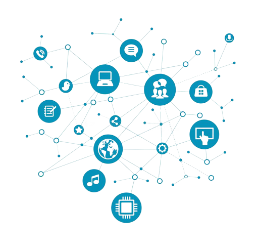
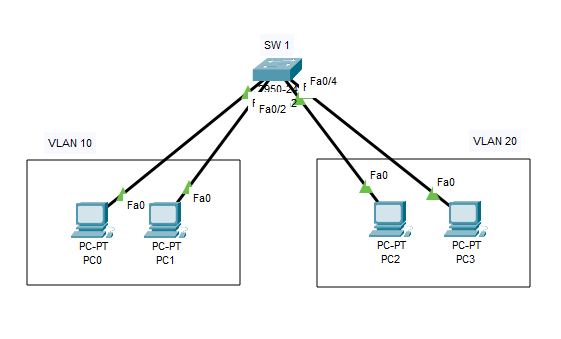
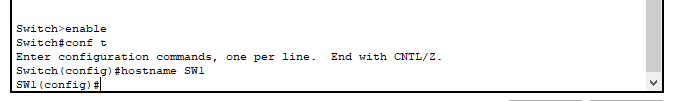
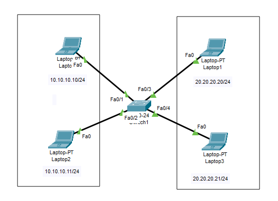
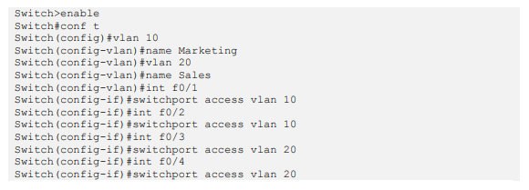
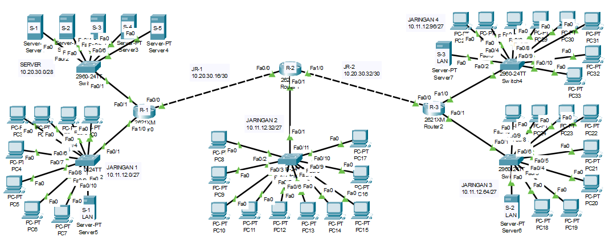
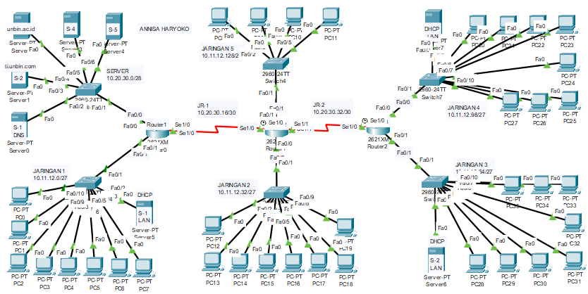

Apa Itu Cisco? CISCO merupakan salahsatu vendor perangkat terbesar dalam dunia jaringan. Selain CISCO, ada juga Mikrotik dan Juniper. Kesemuanya mempunyai sertifikasinya masing-masing. Misalkan di CISCO ada CCNA (Cirsco Certified Network Academy), CCNP (Cirsco Certified Network Professional) dan CCIE (Cisco Certified Internetwork Expert).
Networking Academy Cisco
Jaringan atau network adalah kumpulan perangkat jaringan (network devices) dan perangkat endhost (end devices) yang terhubung satu sama lain dan dapat melakukan sharing informasi serta resources.
Komponen pembentuk jaringan:
IP address dipakai untuk pengalamatan dalam jaringan. IP Network sebagai identitas network/jaringan. Jika ada IP 192.168.1.0/24 berarti mewakili suatu kelompok IP (network) dari 192.168.1.1 – 192.168.1.254. IP broadcast merupakan IP terakhir dalam network yang dipakai untuk membroadcast packet broadcast. Host adalah ip yang disediakan untuk host.
Ada beberapa jenis IP:


Switch adalah bridge dengan beberapa kelebihan, yaitu: mempunyai banyak port, mempunyai macam-macam port seperti FastEthernet & Gigabit, fast internet switching, dan large buffers.


Virtual LAN (VLAN) membagi satu broadcast domain menjadi beberapa broadcast domain, sehingga dalam satu switch bisa saja terdiri dari beberapa network. VLAN adalah fasilitas yang dimiliki oleh switch manageable, contohnya cisco.

Dalam static routing, network administrator memasukkan route ke tabel routing secara manual untuk menuju ke spesific network. Konfigurasi harus diupdate secara manual setiap terjadi perubahan topologi.
ip route destination_network subnet_mask next_hop_ip

Dynamic routing menggunakan protocol routing dalam pembentukan tabel routing.
Ketika topologi berubah, tabel routing akan ikut berubah secara otomatis.
OSPF (Open Shortest Path First)
Konfigurasi OSPF pada router. OSPF menggunakan process ID. Process ID pada setiap router tidak harus sama, yang terpenting adalah areanya. Untuk terhubung antara area yang satu dengan yang lain harus melewari area 0 atau area backbone.